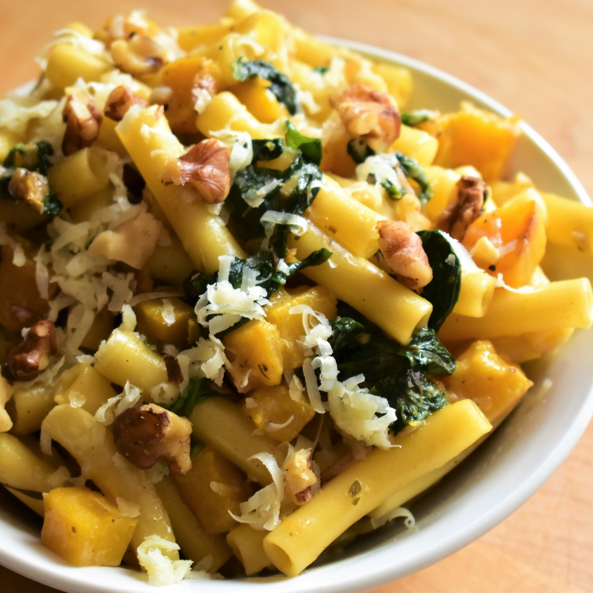

Creamy Butternut Squash Pasta

Description
This quick and easy-to-make pasta is highly recommended for vegetarians and people wanting to try some delicious veggie meals!
Ingredients
- 1 (16 ounce) package ziti
- 1 tablespoon olive oil
- 2 cups cubed butternut squash
- 1 tablespoon minced fresh garlic
- 2 teaspoons rubbed dried sage
- 1 teaspoon dried thyme
- 1 ½ cups heavy cream
- 1 cup fresh spinach leaves
- ¼ cup grated Parmesan cheese, or more to taste
- salt and groud black pepper to taste
- 3 tablespoons chopped walnuts
Steps
- Bring a large pot of lightly salted water to a boil. Add ziti and cook, stirring occasionally, until tender yet firm to the bite, 10 to 11 minutes. Drain and set aside.
- Meanwhile, heat olive oil in a large skillet over medium heat. Add squash and saute until fork-tender, 10 to 15 minutes. Add garlic, sage, and thyme; cook until fragrant, about 1 minute.
- Fold in cream and spinach; bring to a simmer. Add 1/4 cup Parmesan cheese and season with salt and pepper. Add ziti and toss until evenly coated. Cook until sauce has thickened, 1 to 3 minutes. Remove from heat.
- Divide between 8 bowls. Top with walnuts and more Parmesan.